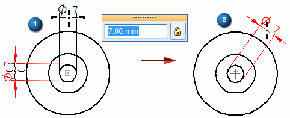
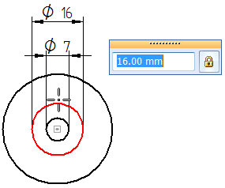
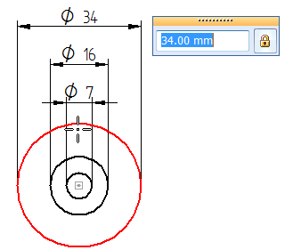

Place concentric diameter dimensions
You can place concentric diameter dimensions so that they are stacked, aligned, and sorted automatically from smallest to largest, no matter the order in which you select the geometry. Using this method, the dimensions automatically form a dimension group.
Place the first diameter dimensions in a group
-
Choose the Smart Dimension command
 .
. -
Click an arc or circle where you want to place a diameter dimension.
-
On the Smart Dimension command bar, click Concentric Diameter
 .
. -
Define the orientation of the new dimension group by moving the cursor until the diameter dimension is positioned where you want it, and then click to place it.
-
The default orientation of the dimension is horizontal or vertical to the center of the radial geometry (1), when the Orientation list is set to Automatic, Horizontal/Vertical, or By 2 Points.
-
You can orient the dimension at an angle (2) by pressing Shift while you move the cursor to the desired orientation.

-
-
Click the next concentric circle or arc.
The dimension is placed automatically using the orientation of the first dimension.

-
Click the next concentric circle or arc to place the third dimension.

-
Continue selecting concentric geometry to place more dimensions in the group, or press Esc to end the command.
Add concentric diameter dimensions to a group
-
Choose the Smart Dimension command
. -
Select an arc or circle that is concentric with the other geometry in the group.
-
On the command bar, click Concentric Diameter
. -
Select an existing coordinate dimension to associate the new dimension with the concentric dimension group.
-
Click to place the new coordinate dimension.
If necessary, the existing dimensions adjust their spacing to accommodate the new one.
-
Concentric diameter dimensions created using the Concentric Diameter option are created in alignment groups. This means you can:
-
Drag any dimension line in the alignment group and all of the dimensions adjust along with it. You can move the stack toward or away from the dimensioned geometry.
-
Alt+drag a single dimension in the alignment group to manipulate it independently of the others in the group. This detaches the dimension from the group.
-
Shift+drag a dimension to adjust the spacing between it and adjacent dimensions. You cannot drag it inside the smaller adjacent dimension.
-
Use the following commands to manage the membership of dimensions in the dimension alignment group:
-
-
To improve the legibility of dimension text in the stack, you can set the option, Alternate text positions, on the Lines and Coordinate tab in the Dimension style, and you can modify it for a selected dimension in the Dimension Properties dialog box.
Alternate text position=on
Alternate text position=off


How do I
Example: Dimension the length of a lineExample: Dimension the diameter of a circle
Dimension similarly sized holes
Example: Dimension a curved slot
Place a feature callout dimension
Place a 3D dimension on a pictorial drawing view
Define smart feature properties in the Dimension style
Look up more details
Smart Dimension commandSmart Dimension command bar